Gemini 330 系列相机简易使 用指南
● Gemini 335/336 包装清单
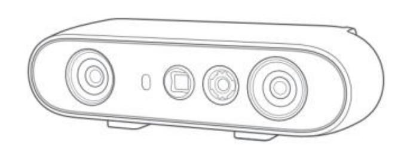
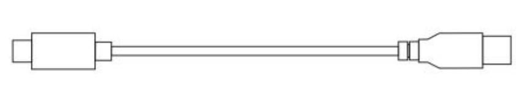
ORBBEC Gemini 335/336 3D 相
机 USB-C to USB-A 数据
线
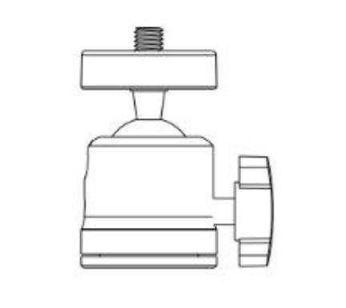
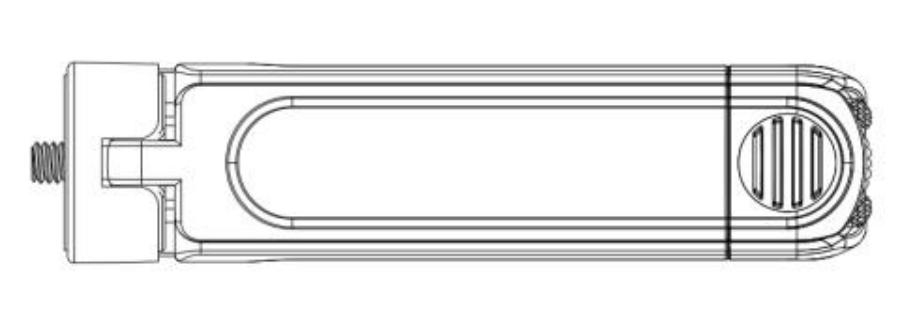
三脚架云
台
三脚架
● Gemini 335L/336L 包装清单
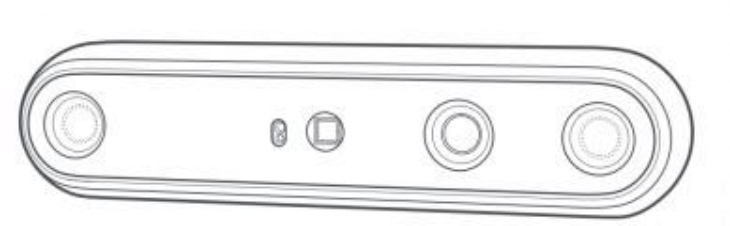
Gemini 335L/336L 3D 相
机 USB-C to USB-A
数据线
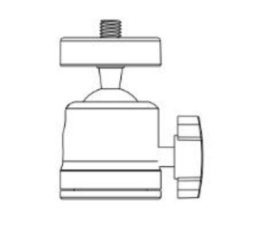
三脚架云
台
三脚架
连接 ORBBEC 相机
● Gemini 335/336
① 组装三脚架云台和三脚架，并将相机固定在组装好的三脚架上， 如下面的步骤1 所示。
② 使用 USB-C to USB-A 数据线连接相机的Type-c 连接器，如 下面的步骤 2 所示。
③ 使用 USB-C to USB-A 数据线将 USB-A 连接器连接到主机， 如下面的步骤 3 所示。
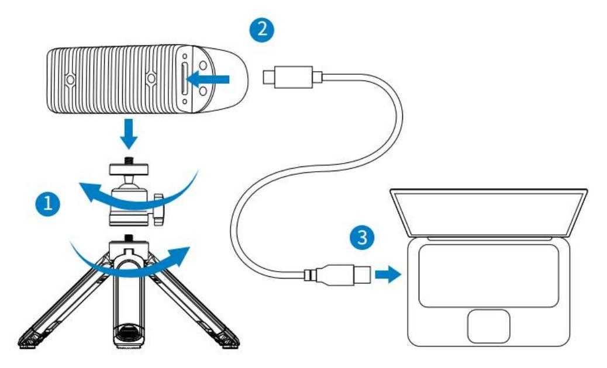
● Gemini 335L/336L
① 组装三脚架云台和三脚架，并将相机固定在组装好的三脚架上， 如下面的步骤1 所示。
② 使用 USB-C to USB-A 数据线连接相机的Type-c 连接器，如 下面的步骤 2 所示。
③ 使用 USB-C to USB-A 数据线将 USB-A 连接器连接到主机， 如下面的步骤 3 所示。
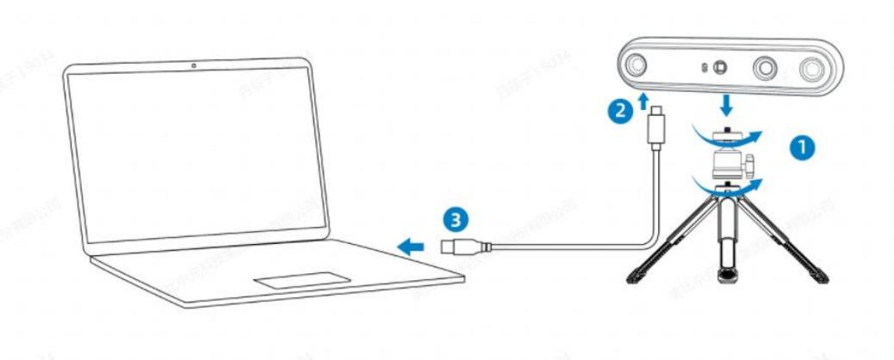
获取 ORBBEC VIEWER 工具
根据您的系统和版本选择并下载相应的 Orbbec Viewer 工具。
启动 ORBBEC VIEWER
1. 启动 Orbbec Viewer 后，请确保该工具能够识别 3D 相机，如下 图所示。
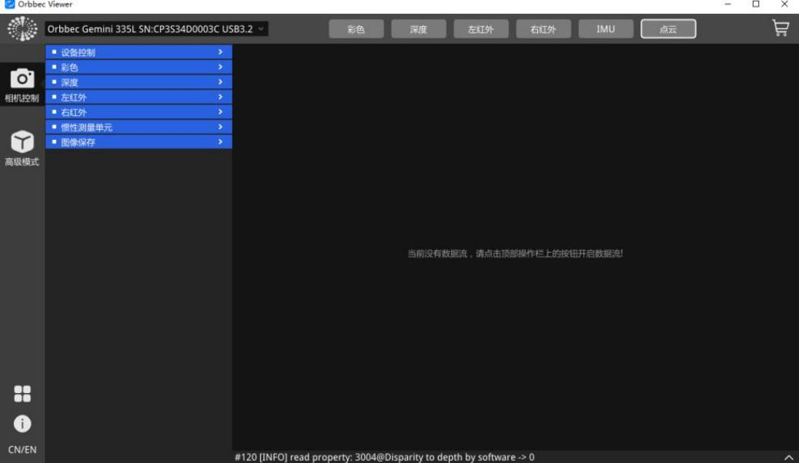
【备注】如果相机无法识别，首先要检查相机和主机是否正确连接。 您可以尝试断开 USB 电缆，然后重新连接。如果仍然无法识别，请 考虑更换 USB 电缆或确认主机的电源是否符合要求的规格。
2. 点击工具顶部的深度按钮后，启动深度相机并可预览深度图
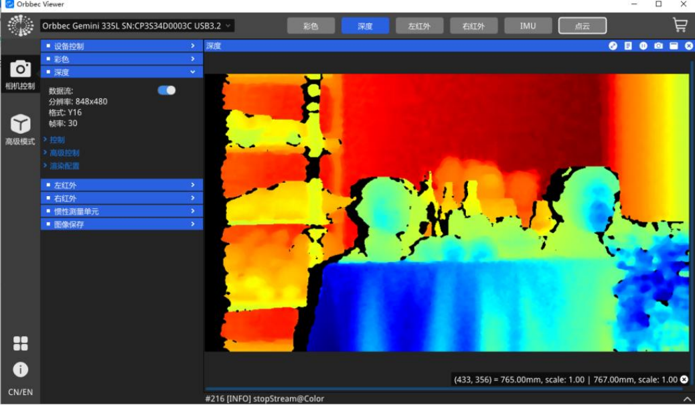
3. 点击彩色按钮后启动彩色相机并可预览彩色图
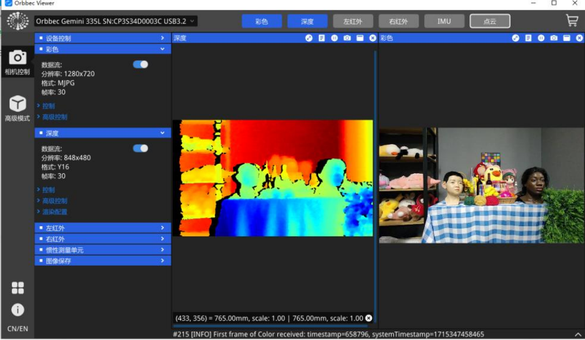
4. 点击左红外和右红外按钮后将启动左右红外相机并可预览左右红 外相机的 IR 图
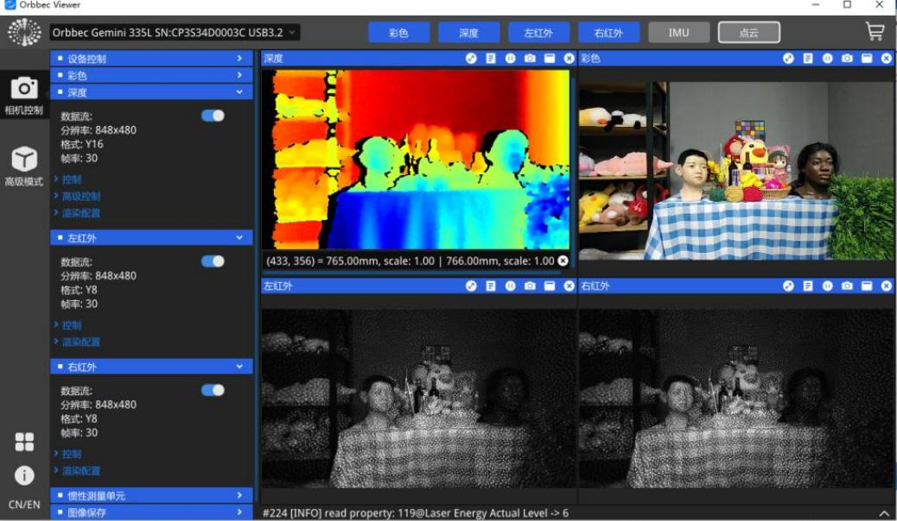
5. 点击 IMU 按钮后将启动 IMU 数据流
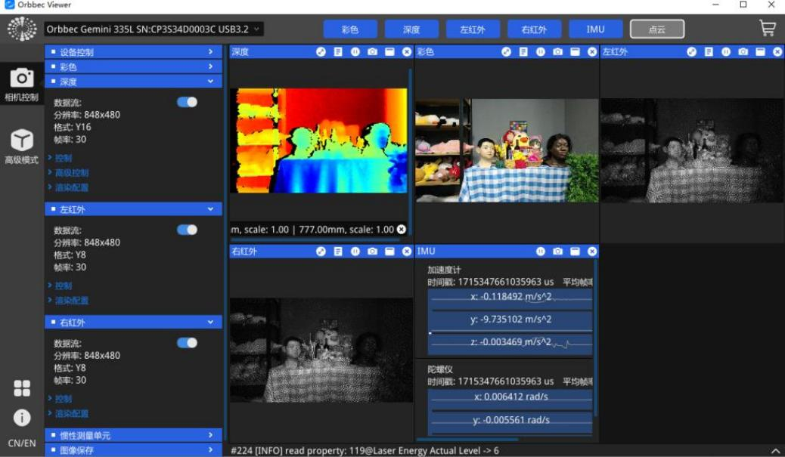
6. 点击每个窗口顶部的按钮可显示元数据信息，再按一次即可隐 藏元数据信息。
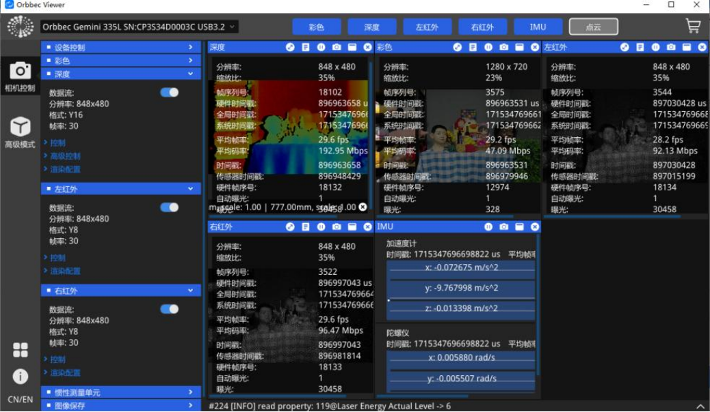
7. 点击点云按钮后将启动和预览 3D 点云
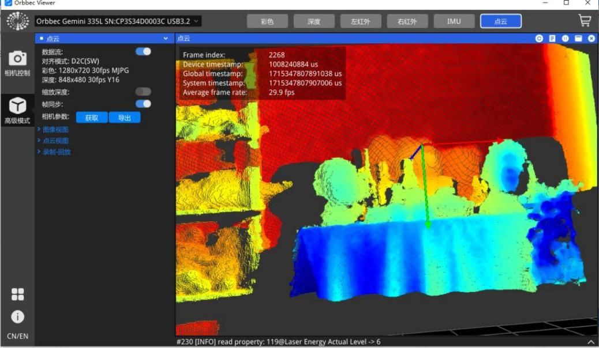
8. 点击左侧 “ 图像视图” 菜单下的 “显示” 按钮可启动和预览 D2C (深度对齐到彩色图像) 。
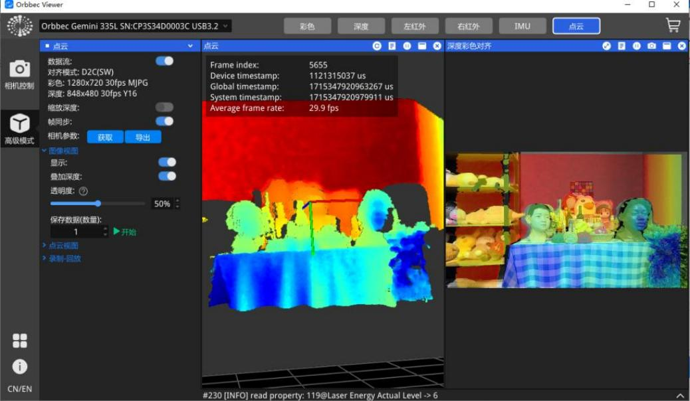
9. 以上为 Orbbec Viewer V1.9.4 版本的相关操作，更新版本可能会 存在细微差异，有关最新版本的更多详细操作，请参阅 Orbbec
Viewer 操作视频。
Δ注意事项
1. 请按照指南正确操作设备，操作不当可能会损坏内部组件。
2. 请勿使相机跌落或受到机械应力。
3. 请勿尝试修改相机，因为此类修改可能会导致永久性损坏 或性能下降。
4. 长时间使用时，相机的温度可能会升高。
5. 请勿触摸镜头。镜头上的指纹可能会影响图像质量。
6. 将产品放在儿童或动物接触不到的地方， 以免发生意外。
7. 如果出现无法识别相机，请检查电缆是否符合电源/数据 传输要求，并重新插入 USB 以重新连接。
8. 根据国际标准 EN/IEC 60825-1 第 3 版 (2014)，该产品 被归类为1 类激光产品；本文件规定以外的控制、调整或程 序可能会导致危险的辐射暴露。
安全和处理说明:
● 如果观察到任何外部损坏，请勿打开产品电源。
● 请勿尝试打开本产品的任何部分。没有用户可维护的部件。
● 小心不可见的激光辐射。避免直接暴露在光束下。
● 为了保持合规性和安全标准，请勿修改或维修产品。未经授权的 修改或维修可能导致排放超过1 级安全水平。
● 仅使用与特定模块 SKU 和修订版相匹配的官方版本更新相机固 件， 以确保正确的功能和安全性。